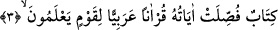

Çünkü rahmet hem ezelî hem de ebedîdir; zelle ise yokken sonradan var olmuş bir
şeydir. Yokken sonradan var olan bir şey, hem ezelî hem de ebedî bir şeye nasıl
mukavemet edebilir!?
Sâib şöyle der:
Sel sebebiyle yolun tozu yıkanır, temizlenir.
Allah’ın affı varken günahlardan dolayı endişe niye?”
Şeyh Sa’dî de şöyle der:
“Kerîm olan Allah’ın lutfu o kadar büyüktür ki,
Afvının büyüklüğü yanında günahın çokluğunun sözü mü olur?”
3. (Bu,) bilen bir kavim için, âyetleri Arapça okunarak açıklanmış bir kitaptır.
“(Bu,)” mânâlarını “bilen” Arap “bir kavim için” emir, nehiy, helal, haram, vaad,
vaîd, kıssalar ve tevhid gibi konular başta olmak üzere “âyetleri Arapça okunarak”
uzun uzun “açıklanmış bir kitaptır.”
Râgıb el-Isfahânî der ki: “Bu Kur’an; âyetleri, hüküm ve hikmet sahibi (bulunan
ve her şeyden) hakkıyla haberdar olan Allah tarafından muhkem kılınmış, sonra da
Allah’tan başkasına kulluk etmeyesiniz diye ayrı ayrı açıklanmış bir kitaptır.” (Hûd
11/1-2) âyeti, “Sana bu kitabı; her şey için bir açıklama, doğru yolu gösteren bir
rehber, bir rahmet ve müslümanlar için bir müjde olarak indirdik.” (en-Nahl 16/89)
âyetine işâret etmektedir. Şimdi insaf sahibi her insan, halkın elinde Kur’an kadar
çeşitli ilimleri bir arada toplayan başka bir kitap olmadığını bilip kabul eder.
“bir kitaptır” ifâdesi, (sûrenin) bir diğer haber(i) olup bir araya getirme mânâsına
gelen “ketb”den gelmektedir; Kur’an’a “kitâb” denmesinin sebebi de budur. Çünkü
Kur’an öncekilerin ve sonrakilerin ilimlerini kendinde toplamıştır.
(__WORD__) “Arapça okunarak” ifâdesi ile kasdedilen, âyetleri Arapça okunarak
açıklanan “kitap”tır. Bu ifâde cümle içerisinde ya “medih” olarak ya da “kitabün”
kelimesinin bir sıfatla mevsuf olmasından dolayı “hâliyet” üzerine mensuptur. Buna
“hâl-i muvattıe” denir. Söz konusu hal, -yukarıda defalarca geçtiği üzere- câmid bir isim
olup bir sıfatla tavsif edilmektedir; ama bu sıfat da aslında bir haldir. Mânâsı şudur:
“Kur’ân kolaylıkla okunup anlaşılması için “tâzî” yani Arap dilinde gelmiştir.”
et-Te’vîlâtü’n-Necmiyye’de der ki: Yüce Allah burada; Kur’an-ı Kerim’in, Allah’ın
kelâmı ve sıfatı olması yönüyle kadîm olduğuna; Arapça oluşunun ise, Allah’ın
giydirdiği mahluk bir sıfat olduğuna işaret etmektedir. Artık her kim Kur’an’ın Arapça